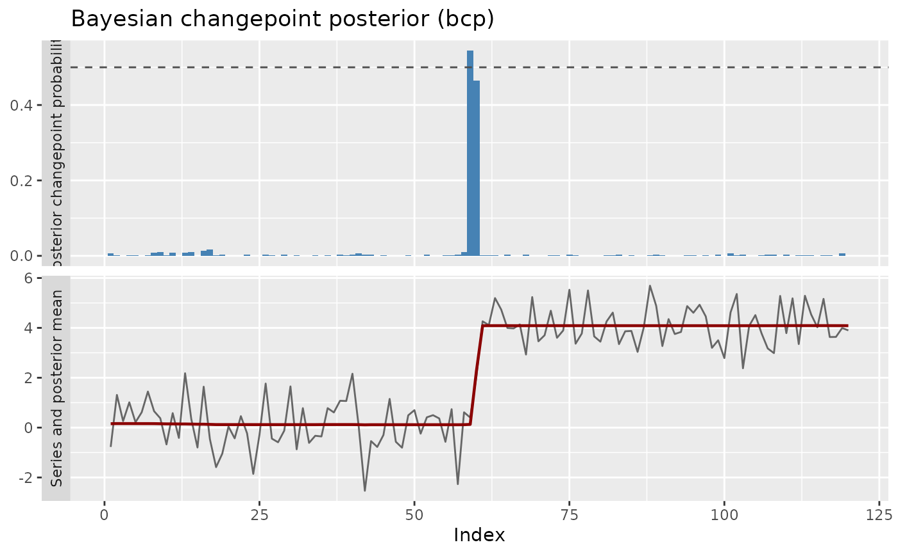

Bayesian changepoint wrapper (Barry-Hartigan product partition model)
Source:R/wrap-bayes.R
bcp_wrapper.RdWraps bcp::bcp(), the MCMC implementation (Erdman and Emerson, 2007)
of the Barry and Hartigan (1993) product partition model. The engine
returns a posterior probability of a changepoint at every location;
locations whose posterior probability reaches prob_threshold are
reported as changepoints, and the full probability profile is kept so that
ggcpt_posterior() can draw the classic two-panel posterior
plot.
Arguments
- x
A numeric vector.
- prob_threshold
Posterior probability cutoff in \((0, 1)\) above which a location is reported as a changepoint. Defaults to
0.5.- burnin
Number of burn-in MCMC iterations. Defaults to
50.- mcmc
Number of post-burn-in MCMC iterations. Defaults to
500.- seed
Optional seed for reproducibility of the MCMC run.
- ...
Additional arguments passed to
bcp::bcp().
Value
A ggcpt object. The changepoints tibble carries a
posterior_prob column, and the data tibble carries the
posterior mean in its fitted column.
References
Barry D, Hartigan JA (1993). “A Bayesian analysis for change point problems.” Journal of the American Statistical Association, 88(421), 309–319.
Erdman C, Emerson JW (2007). “bcp: An R package for performing a Bayesian analysis of change point problems.” Journal of Statistical Software, 23(3), 1–13.
Examples
res <- bcp_wrapper(c(rnorm(60), rnorm(60, 4)), seed = 2026)
#> Loading required package: bcp
#> Loading required package: grid
res$changepoints
#> # A tibble: 1 × 3
#> cp cp_value posterior_prob
#> <int> <dbl> <dbl>
#> 1 60 0.213 0.996
ggcpt_posterior(res)
